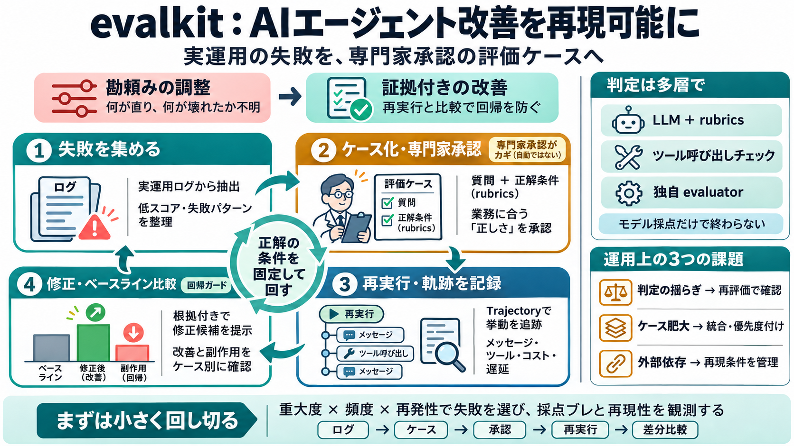

AI Agent Evaluation Frameworks (2026): 7 Compared
| Your priority | Best choice | Runner-up | --- | Open-source, code-first evals in CI | DeepEval (by Confident AI) | R…

実運用の失敗を“評価ケース”へ変換し、専門家の承認のもとで再実行・比較することで、AIエージェント改善を証拠と根拠に寄せます。
AIエージェントの品質向上（プロンプト/ツール/スキル/データ）
Trajectory（軌跡）とベースライン比較で回帰を守る
エージェント改善が経験則の“当てずっぽう”になると、なぜ良くなった／壊れたのかを追跡できません。
LLMの採点だけで満足し、現場の失敗パターンが評価に入りにくい
失敗の再現・比較・回帰ガード（regression guard）が一連で回ること
ログに残った失敗を、専門家が“正解の条件”として承認することで、再実行可能なテストケースへ昇格させます。
production/staging/manualの実行ログ抽出
失敗パターン→質問＋rubrics（ルーブリック）
trajectory＋スコアで再実行し、差分を比較
evalkitは「失敗収集→ケース下書き→専門家承認→再実行→修正案→再比較」を、証拠付きで連結します。
collect：低スコア/失敗をログから集める → パターン抽出
author：コーディングエージェントが eval cases を下書き → 専門家が承認/修正
run & trace：ケースを実行し、trajectory（メッセージ/ツール/推論/コスト/遅延など）を保持
fix & compare：失敗時に file-cited fixes で修正候補 → baseline比較で差分確認
ケースは「入力（質問）」だけでなく、専門家が承認できる“正解の条件”をルーブリックとして持ちます。
質問（input）
正解に含まれるべき事実・条件
スコア＋trajectoryで評価
ケース実行のたびに、メッセージ・推論・ツール呼び出し・トークン・コスト/遅延などを保存し、失敗を再確認できます。
メッセージ／ツール呼び出し／推論プロセス
トークン・コスト・タイミング・遅延
ドキュメント上は LLM-judged rubrics に加えて、ツール呼び出しチェックや自前 evaluators も使えるとされています。
ルーブリックに基づく評価
ツール呼び出しなど観測可能要素
チームの evaluator を組み込み
baseline比較（例：evalkit summary
どのケースでスコアが上がったか
どのケースでスコアが下がったか
ケースが増えるほど管理コストも増えるため、最初から全失敗をケース化せず、まずは重要な失敗に絞るのが現実的です。
頻度 × 重大度 × 再発性
LLMジャッジのブレ・再評価の必要性を計測
ケース粒度、外部依存（データ/ツール）の扱いを運用へ落とす
rightの定義を業務側に寄せることで、開発者都合の“正しさ”に引っ張られにくくなります。
実運用ログ→ケース→再実行→比較の導線が一貫
誤った改善が業務上の誤判断につながるリスクを下げる方向
提示内容だけでは、LLMジャッジの信頼性（揺らぎ）やケース統合/削減方針、外部依存による再現性破綻への戦略が読み取れません。
同一入力でも判定が変わり得る
増加＝管理コスト増
外部データ/ツールで再現性が崩れる
evalkitは、実運用の失敗を専門家承認の評価ケースに変え、trajectoryとベースライン比較で回帰ガードを作る土台です。
| Your priority | Best choice | Runner-up | --- | Open-source, code-first evals in CI | DeepEval (by Confident AI) | R…
If you’re building AI agents and need production-grade open-source observability and evaluation without vendor lock-in, …
OpenInference builds on OpenTelemetry to trace AI agents: their LLM calls, tool use, retrieval and reasoning steps. It i…
# InferEdge ID: A86TkRJaeuQg Website: www.inferedge.com LinkedIn: www.linkedin.com/company/inferedge-ai · 101 followers …
# Braintrust ID: 0viQLo56tq82 Website: www.usebraintrust.com Legal name: Freelance Labs, Inc. Headquarters: San Francisc…